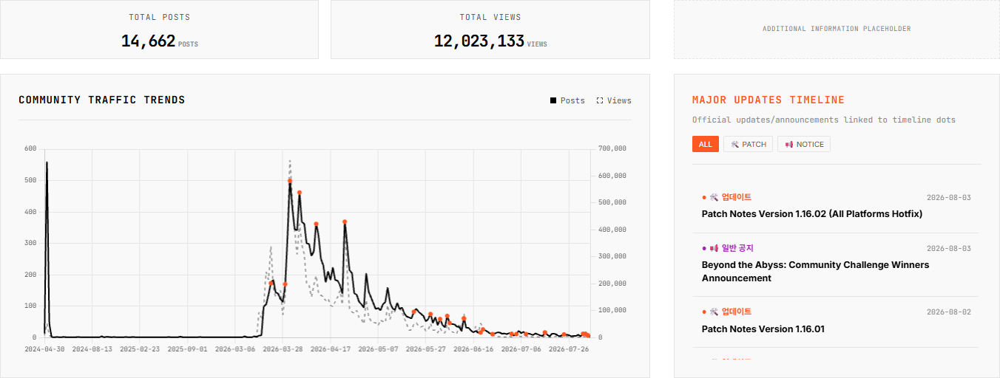
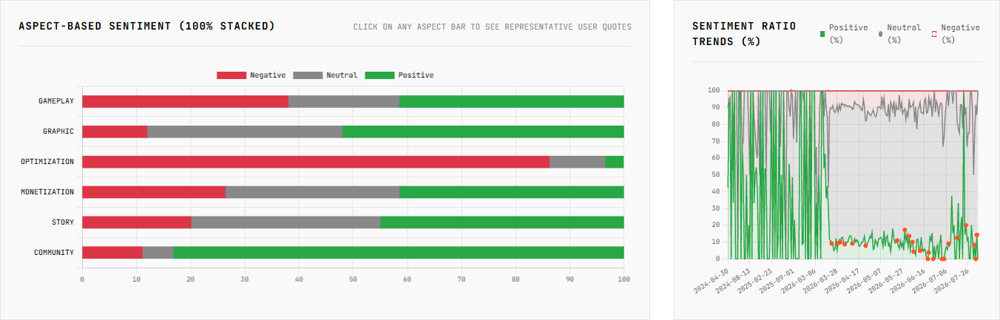
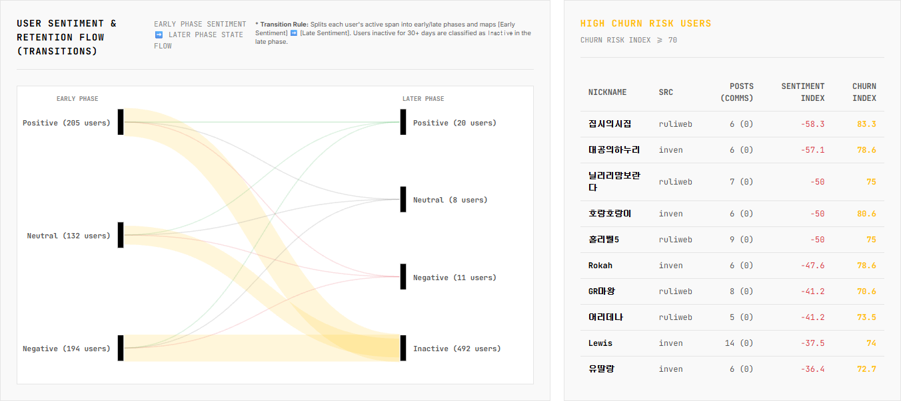
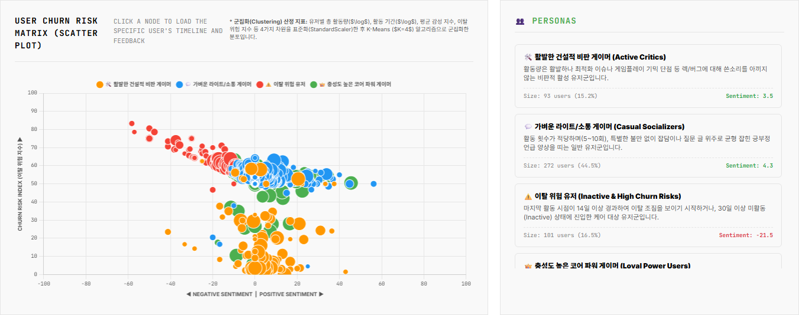
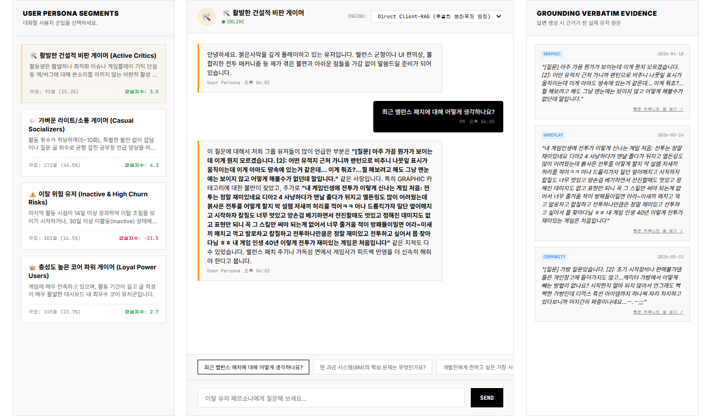
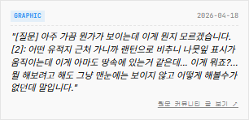

대시보드 이용 방법
데이터 기반의 커뮤니티 동향 및 유저 반응 분석 시스템 사용 가이드라인
AI 기반 심층 텍스트 분석 아키텍처
본 대시보드는 수집된 유저 피드백의 심층 분석을 위해 로컬 환경에 최적화된 Gemma(제마) 모델과 고성능 머신러닝 알고리즘을 활용합니다.
- 정밀한 감성 분류: 단순 키워드를 넘어 문맥을 이해하여 긍정(Positive), 부정(Negative), 중립(Neutral)으로 텍스트 뉘앙스를 자동 분류합니다.
- 다차원 카테고리 태깅: 게임플레이, 그래픽, 최적화 등 핵심 카테고리별로 유저 피드백을 맵핑하여 항목별 여론을 정량화합니다.
- 과학적 이탈 예측 및 페르소나 군집화: 단순 통계가 아닌 데이터 사이언스 기법(StandardScaler, K-Means Clustering)을 적용하여 유저를 정밀하게 세분화합니다.
1. POSTS TRENDS 탭
기간 설정 및 트래픽 트렌드 추적
컨트롤 패널 활용
상단의 데이터 누적 기간 컨트롤을 통해 1개월, 3개월 등 특정 이벤트를 전후로 기간을 좁혀 데이터를 재계산할 수 있습니다. 일별, 주별 분석 단위를 조절하여 데이터의 노이즈를 제어하세요.
트래픽 트렌드와 업데이트 맵핑
주황색 점(Dot)으로 표기된 구간은 개발사의 실제 패치나 공지사항 배포 시점입니다. 액션이 발생했을 때 커뮤니티 트래픽과 여론이 어떻게 연동되어 반응하는지 상관 관계를 직관적으로 확인할 수 있습니다.

심층 감성 분석 (Aspect-based Sentiment)
항목별 감성 분포도 (100% 누적 차트)
게임 내 요소(스토리, 전투 등)별로 긍부정 비율을 파악합니다. 막대를 클릭하면 해당 항목에 대한 유저 원문 피드백이 하단에 즉시 필터링되어 노출됩니다.
감성 비율 시계열 트렌드
긍/부정 여론의 비율 변동 추이를 시간 흐름에 따라 퍼센트(%)로 표시하여 안정적인 여론 흐름을 유지하고 있는지 모니터링합니다.

2. USER CHURN 탭 (리텐션 및 이탈 예측)
핵심 이탈 지표 (KPIs) 및 감성 전이 흐름
주요 모니터링 지표
총 활동 유저 수, 게임 감성 지수(Game Sentiment Index), 고위험 이탈률(High Churn Risk Rate)을 상단에서 일간/주간/월간 단위로 요약해 보여줍니다.
최근 14일 초과 미활동 시 일별 가중치 + 부정문 비율 가중치 + 특정 이탈 키워드 등장 시 가산점 알고리즘으로 산출.
Sankey Flow Diagram (유저 상태 전이 흐름)
유저들의 초기 감성(예: Positive)이 후반기에 어떻게 전이(예: Negative 또는 Inactive)되는지 흐름을 추적합니다. (※ 30일 이상 미활동 유저는 Inactive로 간주)

다차원 리스크 매트릭스 (K-Means Clustering)
유저 군집화 산점도 차트
AI 머신러닝(K-Means)이 유저들을 4가지 페르소나 군집으로 묶어 산점도 상에 배치합니다. 노드를 클릭하면 해당 유저의 상세 활동 내역과 원문 프로필을 우측과 하단에서 확인할 수 있습니다.
log(총 활동량), log(활동 기간), 평균 감성 지수, 이탈 위험 지수 차원으로 분석.

3. PERSONA CHAT 탭 (페르소나 챗봇)
Gemma 기반 유저 페르소나 인터뷰
유저 세그먼트 (Sidebar)
K-Means로 분류된 4가지 집단(활발한 비판가, 라이트 소셜 유저, 코어 팬층, 이탈 고위험군) 중 하나를 선택하여 해당 페르소나와 직접 가상 인터뷰를 진행할 수 있습니다.
맞춤형 챗 인터페이스 (Chat UI)
선택한 군집의 성향에 맞는 추천 질문(Quick Prompts)이 하단에 제공됩니다. 예를 들어 이탈 고위험군에게는 "접속이 뜸해진 구체적 계기가 무엇인가요?"를 물어 즉각적인 텍스트 인사이트를 얻을 수 있습니다.
추론 엔진 선택 (Engine Selector)
화면 상단의 엔진 선택 옵션을 통해 답변 생성용 백엔드 파워를 제어할 수 있습니다.
- Direct Client-RAG: 브라우저 내장 검색 엔진으로, 외부 서버 통신 없이 클라이언트 환경에서 로컬 데이터를 매핑하여 즉각적인 답변을 제공합니다.
- Local Backend API: 로컬 서버(Ollama 또는 FastAPI) 상에서 구동 중인 Gemma 모델을 실시간 호출하여 문맥 지향적인 생성형 답변을 제공합니다.

신뢰성 검증 (Grounding Evidence)
증강 검색 기반 근거 제시 (Evidence Panel)
AI가 임의로 답변을 지어내는 환각(Hallucination) 현상을 방지하기 위해 RAG(검색 증강 생성) 기술이 적용되어 있습니다.
챗봇이 대답할 때마다 해당 페르소나 집단 내 유저들의 실제 코멘트 및 발언 원문(Verbatim)이 우측 패널에 실시간으로 매핑됩니다. 이를 통해 도출된 인사이트가 실제 텍스트에 확실하게 근거하고 있는지 검증할 수 있습니다.
우측의 캡처 예시처럼, AI 답변 생성의 토대가 된 실제 유저 발언과 날짜, 카테고리 태그가 명확하게 노출됩니다. 카드 클릭 시 해당 내용이 업로드된 원문 커뮤니티 페이지로 즉시 이동할 수 있습니다.

로컬 AI 모델 선정 이유 및 통합 Gemma 아키텍처 (Gemma 2B)
본 프로젝트는 수집 데이터의 다차원 분석(Batch)과 챗봇 실시간 인터뷰(Live Chat) 모두에 Gemma 2B 모델을 일관되게 적용하여 통합 로컬 AI 아키텍처를 구축하였습니다. Gemma 모델 선정 및 통합 운용의 주요 목적은 다음과 같습니다.
1 정밀한 카테고리 분류 및 데이터 신뢰성 확보
Google의 Gemma 2B 모델(2.6B)은 뛰어난 언어 맥락 이해도와 instruction-following 성능을 갖추고 있어, 대규모 유저 피드백 데이터 정제 시 분류 붕괴 없이 gameplay(전투/조작 등), story, graphic 등 개별 요소별 여론 수치를 신뢰도 높게 도출해 냅니다.
2 가상 인터뷰(RAG) 답변의 맥락적 정밀성
페르소나 챗봇 구동 시, Gemma 2B는 검색된 SQLite Verbatim(실제 유저 원문) 데이터에 확실하게 근거하여 답변을 생성합니다. 환각 현상(Hallucination)을 제어하고 각 페르소나 군집 고유의 감성과 주장을 흐트러짐 없이 유지하여 정교한 인터뷰 답변을 도출합니다.
3 단일 모델 통합을 통한 메모리 자원 효율화
분석 엔진과 대화 엔진을 Gemma 2B 단일 모델로 통합(Unified Model Pipeline)하여 로컬 컴퓨터 메모리 상의 모델 로딩 오버헤드를 극대화로 줄였습니다. VRAM 및 RAM 자원 효율성이 향상되었으며, 양자화(GGUF INT4) 포맷을 통해 실시간 반응 속도(1~2초)까지 확보했습니다.